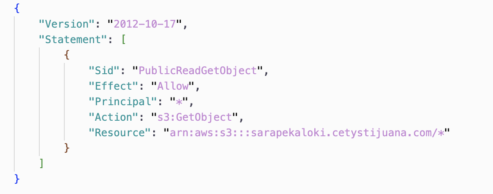
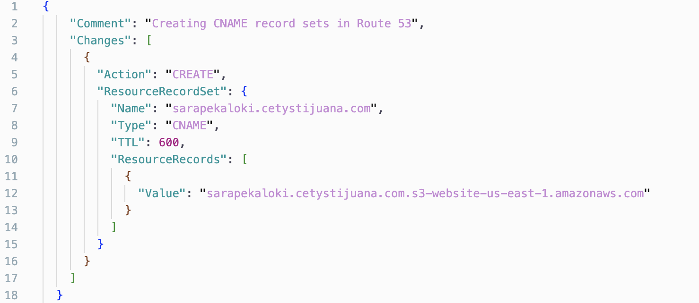

1. Create a static website using AWS S3 and explain in great technical detail what you did.
Primero comenzamos por ejecutar el siguiente comando de s3api (se limitan a utilizar modelos en formato JSON). Si seguimos los pasos de la tarea anterior,
create-bucket es para crear un nuevo bucket, a este comando se le agregará el flag de --bucket donde se escribirá el nombre. Seguido vendrá
el flag de --region donde seleccionaremos us-east-1.
aws s3api create-bucket --bucket sarapekaloki.cetystijuana.com --region us-east-1
El siguiente paso que realicé fue hacer un directorio local con el nombre de mi bucket sarapekaloki.cetystijuana.com
y aquí dentro cree el archivo de bucket_policy.json y procedí a abrirlo en vsCode para editarlo. Se deberá de actualizar el Bucket Policy para que se de acceso de lectura del bucket al público.
El primer parámetro es "sid", esto es el Statement Id, el cual se le da el valor de PublicReadGetObject, indicando el permiso a aplicar sobre el objeto.
El siguiente parámetro es "effects", este valor puede ser "allow" o "deny", en este caso queremos que el request se efectue, por lo que se pone "allow".
Continuando, tenemos "Principal", que se pone como *, esto significa "all users".
La acción que se selecciona es "s3:GetObject", es la operación que se realiza sobre el recurso, en este caso queremos hacer get al objeto que contiene nuestra página.
Por último el recurso será una referencia al bucket.

Ahora tendremos que ejecutar el comando para ligar nuestro json de bucket policy con el bucket. Se usa la opción put-bucket-policy de s3api, se le pasa el bucket
con el flag --bucket, y se le pasa el archivo de policy con --policy.
aws s3api put-bucket-policy --bucket sarapekaloki.cetystijuana.com --policy file:///users/saramarquez/Desktop/sarapekaloki.cetystijuana.com/bucket_policy.json
Ahora habilitará el bucket para hostear un sitio estático. Para esto ejecutamos el siguiente comando,
la opción website, configura el bucket para que sea un sitio web. Después se le pasa el path hacia el bucket a configurar.
Se usan los flags de --index-document para decirle el nombre de nuestro documento de index, y el --error-document para el documento de error.
Para este punto estos archivos no están hechos, por lo que este será el siguiente paso.
aws s3 website s3://sarapekaloki.cetystijuana.com --index-document index.html --error-document error.html
Dentro del directorio local, se hicieron los archivos de
index.html y error.html, el index será lo que se renderiza en nuestro sitio en caso de éxito, y el error es lo que se renderiza en caso de error.
Una vez creados estos archivos, se procede a editarlos (agregar cualquier algún tag de html). Y por último para subirlos al bucket, usamos el siguiente comando.
Lo que hace este comando es sincronizar los contenidos del directorio local y lo que se encuentra en el bucket. Como en el bucket no hay nada, subirá todo
lo que se encuentra en el directorio local. Es por eso que el punto (. directorio actual) se pone antes del nombre del bucket. Indicando que se hará upload del directorio actual
al bucket.
aws s3 sync . s3://sarapekaloki.cetystijuana.com
Ahora estamos listos para hacer nuestro proyecto dentro del directorio local sarapekaloki.cetystijuana.com. Por practicidad y tiempo
haré todo en vanilla (html, js, css). Antes de comenzar cualquier página, me gusta hacer un boceto del diseño en algún sitio como figma,
una vez definido, puedo comenzar a trabajar en el código sin estar reimaginando el diseño cuando no me gusta.
Dentro de index.html hice todo lo correspondiente a la página principal de mi sitio.
Dentro de esta página podemos redirigirnos a las respuestas de la tarea. El código de esto se encuentra dentro de /src/components/homework.
Para realizar este pequeño proyecto, en cuestiones de técnicas solo use mis conocimientos básicos de css y html.
2. Link your website to a subdomain of cetystijuana.com and explain in great technical detail what you did.
Para esto utilice el servicio de route53 de DNS (Domain Name System), este te permitirá registrar nombres de dominios
para tu sitio web. También provee la funcionalidad para rutear ese nuevo nombre de dominio, al sitio web que le indiques o crees (acceso a esos recursos).
En este caso queremos rutear un subdominio a un recurso dentro de un servicio de AWS (nuestro propio bucket), necesitaremos crear
un CNAME (canonical domain name) record. Este es un tipo de DNS record, que le permite al subdominio apuntar a un hostname (el url del bucket). Comenzaremos por crear nuestro record.json.
Siguiendo la documentación de AWS construiremos este json.

En el parámetro de comment dejaremos lo que estaba escrito en la documentación ya que solo esta describiendo lo que es el archivo.
Continuando, se abre una llave "Changes", donde irá la información relevante. En la llave de "Action" se usará CREATE, puesto a que
estamos creando un nuevo DNS record, después se abre un arreglo con la llave "ResourceRecordSet"; este arreglo contiene múltiples llaves.
La primera es "name", donde se pondrá el nuevo nombre del subdominio, en este caso le puse el nombre exacto del bucket (sarapekaloki.cetystijuana.com),
continuando con la llave "Type", se escribe el tipo de record que en este caso es CNAME. La siguiente llave es "TTL" (time to live), este
indica cuanto tiempo los records se quedarán en cache, antes de que se requiera una nueva copia del servidor de DNS, este tiempo es en segundos. Por último, dentro de
"ResourceRecords" tendremos una llave de "Value", donde irá el url original de nuestro bucket.
Para ejecutar el comando de change-resource-record-sets de route53, primero necesitaremos hacer un paso extra. En este comando
es necesario proveer el hosted zone id del dominio. Una hosted zone, es la representación de una colección de records que pueden ser manejados juntos,
y que pertenecen a un mismo dominio papá. Entonces, para ejecutar el comando necesitamos el hosted zone id de cetystijuana.com. Para ello podemos usar el siguiente comando.
Este trae información sobre las hosted zones, relacionadas con la cuenta de AWS.
aws route53 list-hosted-zones-by-name
Esto nos regresa el id Z03346142C3RKH191036Y, por lo que podemos proceder a ejecutar el comando de change-resource-record-sets.
Este comando te permite, crear, cambiar, o borrar un resource record como el que creamos anteriormente, el cual contiene información al respecto del DNS de un
subdominio o dominio. Por ejemplo en este caso, creamos el record para rutear del url de s3 de mi bucket, al subdominio sarapekaloki.cetystijuana.com. Al comando se le agrega
el flag de --hosted-zone-id donde se le pasa el id capturado antes, y el flag de --change-batch que hace referencia al record.json.
aws route53 change-resource-record-sets --hosted-zone-id Z03346142C3RKH191036Y --change-batch file://record.json
3. Add yourself to the list of students in cetystijuana.com
Para esto, primero avisé a mis compañeros que estaría haciendo modificaciones en el bucket (por messenger y zoom).
Cree un nuevo directorio al cual le puse cetystijuana.com, el cual sería el destinado para guardar todos los archivos dentro de este bucket.
Para descargarlos ejecute el siguiente comando. Lo que hace este comando es sincronizar los contenidos del directorio local y lo que se encuentra en el bucket.
Como inicialmente este directorio local no tiene nada, descargará todo lo que encuentra en s3://cetystijuana.com. El punto (.) al final del comando
hace referencia al directorio local.
aws s3 sync s3://cetystijuana.com .
Una vez descargado todo, abrí mi directorio local en vsCode. Ahi dentro modifique el index.html (el que contiene todas las cartas de los estudiantes).
Copie un bloque con todo el contenido de la carta y pase a cambiar mis datos. Además subí una fotografía a /assets/img/team, para que se desplegara en mi carta.
Corrí el proyecto en local checando que todo estuviera en orden, para poder volver a correr el comando antes descrito pero ahora con el (.) y s3://cetystijuana.com en orden contrario. Ese comando ahora en vez de descargar archivos
detectará que el index.html ha cambiado en tamaño por lo que lo sincronizará y lo subirá al bucket, además de que detectará y subirá el nuevo archivo (mi foto) dentro del folder de assets.
4. Create an entry in the Students DynamoDB table using the cli with the following model
El siguiente comando fue corrido para insertar un elemento a la tabla de Students de dynamoDB
donde primero se hace referencia a dynamodb, después se utiliza la opción put-item para escribir datos en alguna tabla existente.
Después se usa el flag de --table-name y se le pasa el nombre de la tabla donde escribirás. Por último es necesario pasarle el elemento a insertar, en este caso
se tiene que pasar en forma de string la totalidad del elemento, y por cada valor de cada llave, se le tendrá que pasar otro objeto, donde se tendrá la llave "S": y el valor correspondiente a insertar.
aws dynamodb put-item \
--table-name Students \
--item \
'{"full_name": {"S": "Sara Deneb Marquez Navarro"}, "id": {"S": "26509"}, "personal_website": {"S": "sarapekaloki.cetystijuana.com"} }'
Ahora como siguiente paso simplemente ejecute un comando para leer toda la tabla y comprobar que si estaba mi entrada.
Este comando usa la opción de scan, que nos regresa los elementos dentro de la tabla pasada en el flag de --table-name.
aws dynamodb scan --table-name Students
5. Watch the Not Just Code Monkeys by Martin Fowler and write your comments in your personal static website.
Hay tres temas principales de los cuales me gustaría hablar. El involucramiento de los desarrolladores en el diseño del producto en el que trabajan, la responsabilidad y los patrones oscuros, y la diversidad y estigmas alrededor de la profesión.
Se resalta en la plática que ágil no fue creado para que los desarrolladores construyeran exactamente lo que se les ordenara que hagan. Esto es muy real y creo que he caído víctima de ello. Los clientes tienen ideas, esas ideas se procesan a historias y el equipo decide si se pueden o no desarrollar. Sin embargo, no hay nadie con un contexto técnico de desarrollo que esté involucrado en el proceso de diseño. Se defiende esto con el argumento de que se nos cubre del ruido del negocio; pero esto termina en una falta de propósito al momento de desarrollarlo. Gracias a esto, muchas cosas del producto final tienen campo de mejora. Si el producto es para un grupo de usuarios enfocado, quizá el desarrollador podría interactuar con un sector de estos usuarios para entenderlo mejor y poder tener involucramiento en las decisiones de diseño.
Ahora, hablando de las responsabilidades de los programadores, creo que el trasfondo ético y moral detrás de acatar órdenes si debería de ser cuestionado. Si pensamos que recibimos una buena educación profesional técnica, entonces lo más seguro es que esas escuelas buscaban la manera de inculcar valores y formar una persona con criterio. Quizá esto será atribuido al rango de “Soft skills” que el programador posea. Creo que, si una compañía muestra falta de valores con su comportamiento hacia el usuario, quizá ese mismo se llegue a reflejar con el trato a sus empleados, lo cual puede llegar a hacer más fácil la decisión de no tomar esa clase de trabajos.
Por último, creo que es importante y atinado el comentario que hace sobre la desigualdad de género en nuestro campo, si es muy notorio pero creo que en algunas compañías se está volviendo un arma de doble filo. Creo que demerita más el hecho que las empresas de software están contratando más mujeres (cuando en algunos casos alguien más está mejor preparado para el puesto). Cuando esta mujer ya esté dentro de la empresa se puede ocasionar más daño para el equipo que beneficio. Por una parte, los otros miembros al no verla capaz pensarán que es una “Contratación por diversidad” y esto causará una falta de respeto profesional hacia la mujer. Además, esto genera otra vez el estigma de que las mujeres no están “hechas” para este tipo de trabajos. Aunque estos comentarios los hago pensando en el peor caso posible, creo que se podría hacer alguna mejora en los procesos de reclutamiento para evitar la propagación de este fenómeno.
Referencias
[1] AWS. (2023). AWS Documentation. [En línea]. Disponible en: https://docs.aws.amazon.com/